Signal Processing for Vibration Testing¶
In [47]:
%load_ext autoreload
%autoreload 2
%matplotlib inline
import control as ctrl
import matplotlib.pyplot as plt
import vibrationtesting as vt
import numpy as np
import scipy as sp
The autoreload extension is already loaded. To reload it, use:
%reload_ext autoreload
In [48]:
sample_freq = 1e3
noise_power = 0.001 * sample_freq / 2
A = sp.array([[0, 0, 1, 0],\
[0, 0, 0, 1],\
[-200, 100, -.2, .1],\
[100, -200, .1, -.2]])
B = sp.array([[0], [0], [1], [0]])
C = sp.array([[35, 0, 0, 0], [0, 35, 0, 0]])
D = sp.array([[0], [0]])
sys = ctrl.ss(A, B, C, D)
tin = sp.linspace(0, 204.8, num = 2048, endpoint = False)
nr=.5 # 0 is all noise on input
In [3]:
if 'Yout' in vars(): del(Yout); del(Ucomb)
for i in sp.arange(3): #was 2*50
u = np.random.normal(scale=sp.sqrt(noise_power), size=tin.shape)
t, yout, xout = ctrl.forced_response(sys, tin, u,rtol=1e-12,transpose=False)
if 'Yout' in locals():
Yout=np.dstack((Yout,yout+nr*np.random.normal(scale=.050*np.std(yout), size=yout.shape)))
Ucomb=np.dstack((Ucomb,u+(1-nr)*np.random.normal(scale=.05*np.std(u), size=u.shape)))
else:
# 5% half the noise on output as on input
Yout=yout+nr*np.random.normal(scale=.050*np.std(yout[0,:]), size=yout.shape)
# 10% noise signal on input
Ucomb=u+(1-nr)*np.random.normal(scale=.05*np.std(u), size=u.shape)#(1, len(tin)))
In [27]:
tin.shape
Out[27]:
(2048,)
In [26]:
yout.shape
Out[26]:
(2, 2048)
In [25]:
Yout.shape
Out[25]:
(2, 2048, 3)
In [49]:
# Simultaneously plot all outputs resulting from the first excitation
# This really makes no practical sense to do... but this is how you do it.
# Note that we have to swap axes since we want to plot along the 2nd dimension (1)
# but pyplot.plot plots along the first (0th) dimension. The notation used for data
# mores sense when plotting all outputs on the same dimension in the next cell.
plt.plot(tin,sp.swapaxes(Yout[:,:,0],0,1))
plt.xlabel('Time (sec)')
plt.ylabel('$y_n$, $n = 0, 1$')
plt.title('$y_n$ versus time, $n = 0, 1$, first ``experiment"')
Out[49]:
Text(0.5,1,'$y_n$ versus time, $n = 0, 1$, first ``experiment"')
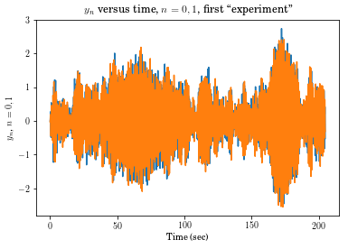
In [50]:
# Simultaneously plot all outputs resulting from the first excitation
plt.plot(tin,Yout[0,:,:])
plt.ylabel('$y_0$')
plt.title('$y_0$ versus time, all ``experiments"')
Out[50]:
Text(0.5,1,'$y_0$ versus time, all ``experiments"')
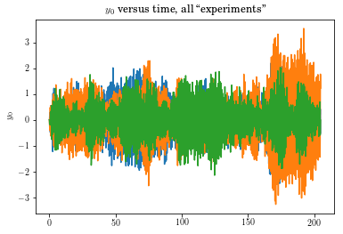
In [51]:
plt.plot(tin, Yout[1,:,:])
plt.xlabel('Time (sec)')
plt.ylabel('$y_1$')
plt.title('$y_1$ versus time, all ``experiments"')
Out[51]:
Text(0.5,1,'$y_1$ versus time, all ``experiments"')

In [54]:
Yout.shape
Out[54]:
(2, 2048, 3)
In [55]:
vt.hanning(Yout).shape
Out[55]:
(2, 2048, 3)
In [52]:
vt.hanning(Yout[0,:,:]).shape
length = 2
(2048, 3)
Swapping axes temporarily to be compliant with expectations. I'll fix them in your result
Out[52]:
(2048, 3)
In [61]:
vt.hanning(Yout)[0,:,:].shape
Out[61]:
(2048, 3)
In [58]:
plt.plot(vt.hanning(Yout)[0,:,:])
Out[58]:
[<matplotlib.lines.Line2D at 0x1c1e3ffc18>,
<matplotlib.lines.Line2D at 0x1c1e3ffd68>,
<matplotlib.lines.Line2D at 0x1c1e3ffeb8>]
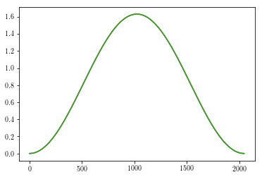
In [62]:
# Here we are windowing the first output. Note that [0,:,:] strips off the first dimension
# If hanning is applied to Yout[0,:,:] it will fail to operate as expected because the first
# dimension (0) is now the time index, where Hanning expects it to be the second.
# The code should be improved to allow application to a desired index. For another day...
plt.plot(tin, vt.hanning(Yout)[0,:,:]*Yout[0,:,:])
plt.xlabel('Time (sec)')
plt.ylabel('Hanning windowed $y_0$')
plt.title('Windowed $y_0$ versus time, all ``experiments"')
Out[62]:
Text(0.5,1,'Windowed $y_0$ versus time, all ``experiments"')

In [63]:
# Note that each layer is a new dataset. Here we plot all 3 datasets on top of each other,
# numbers 0, 1 and 2, for all outputs
plt.plot(tin,np.transpose(Yout[:,:,0]))
plt.plot(tin,np.transpose(Yout[:,:,1]))
plt.plot(tin,np.transpose(Yout[:,:,2]))
plt.title('Time response')
plt.xlabel('Time (sec)')
plt.ylabel('Response (all outputs, all experiments)')
Out[63]:
Text(0,0.5,'Response (all outputs, all experiments)')
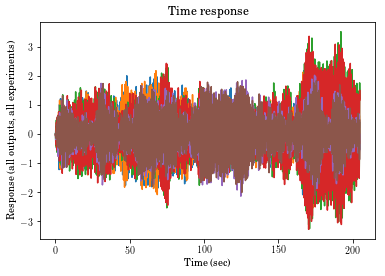
In [64]:
# Note that each layer is a new dataset. Here we plot all 3 datasets on top of each other,
# numbers 0, 1 and 2
plt.plot(tin,sp.transpose(vt.hanning(Yout[:,:,0])*Yout[:,:,0]))
plt.plot(tin,sp.transpose(vt.hanning(Yout[:,:,1])*Yout[:,:,1]))
plt.plot(tin,sp.transpose(vt.hanning(Yout[:,:,2])*Yout[:,:,2]))
plt.title('Time response')
plt.xlabel('Time (sec)')
plt.ylabel('Response (all outputs, all experiments)')
length = 2
(2, 2048)
length = 2
(2, 2048)
length = 2
(2, 2048)
Out[64]:
Text(0,0.5,'Response (all outputs, all experiments)')
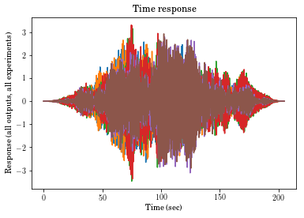
In [65]:
# Note that each layer is a new dataset. Here we plot all 3 datasets on top of each other,
# numbers 0, 1 and 2
plt.plot(tin,vt.hanning(Yout[0,:,:])*Yout[0,:,:])
plt.plot(tin,vt.hanning(Yout[1,:,:])*Yout[1,:,:])
plt.title('Time response')
plt.xlabel('Time (sec)')
plt.ylabel('Response (all outputs, all experiments)')
length = 2
(2048, 3)
Swapping axes temporarily to be compliant with expectations. I'll fix them in your result
length = 2
(2048, 3)
Swapping axes temporarily to be compliant with expectations. I'll fix them in your result
Out[65]:
Text(0,0.5,'Response (all outputs, all experiments)')

In [66]:
# Note that each layer is a new dataset. Here we plot all 3 datasets on top of each other,
# numbers 0, 1 and 2
plt.plot(tin,vt.window(Yout[0,:,:], windowname = 'hanning')*Yout[0,:,:])
plt.plot(tin,vt.window(Yout[1,:,:], windowname = 'hanning')*Yout[1,:,:])
plt.title('Time response')
plt.xlabel('Time (sec)')
plt.ylabel('Response (all outputs, all experiments)')
You shouldn't do that.
The 1 dimension is the time (or frequency) incrementing dimension.
Swapping axes temporarily to be compliant with expectations.
I'll reluctantly return a transposed result.
You shouldn't do that.
The 1 dimension is the time (or frequency) incrementing dimension.
Swapping axes temporarily to be compliant with expectations.
I'll reluctantly return a transposed result.
Out[66]:
Text(0,0.5,'Response (all outputs, all experiments)')
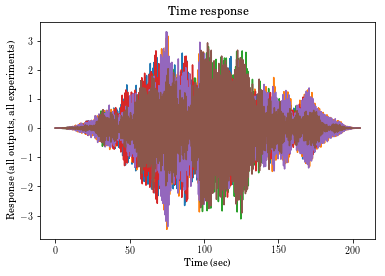
Working up until this point.
In [67]:
plt.plot(vt.window(Yout[0,:,:], windowname = 'flatwin'))
You shouldn't do that.
The 1 dimension is the time (or frequency) incrementing dimension.
Swapping axes temporarily to be compliant with expectations.
I'll reluctantly return a transposed result.
Out[67]:
[<matplotlib.lines.Line2D at 0x1c1ebf5860>,
<matplotlib.lines.Line2D at 0x1c1ebf59b0>,
<matplotlib.lines.Line2D at 0x1c1ebf5b00>]
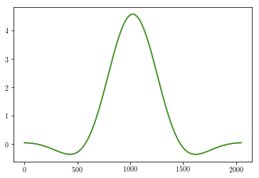
In [68]:
len(sp.expand_dims(Yout[0,:,:],0).shape)
Out[68]:
3
In [69]:
plt.plot(vt.window(100, windowname = 'flatwin'))
Out[69]:
[<matplotlib.lines.Line2D at 0x1c1eace898>]

In [70]:
N = 50
(0.42-0.5*np.cos(2.*np.pi*(np.arange(N)+.5)/(N))+.08*np.cos(4.*np.pi*(np.arange(N)+.5)/(N)))*np.sqrt(5000/1523)
Out[70]:
array([ 6.44696791e-04, 5.86783754e-03, 1.66570121e-02,
3.36658780e-02, 5.77967856e-02, 9.01129953e-02,
1.31731188e-01, 1.83701668e-01, 2.46884563e-01,
3.21830713e-01, 4.08675768e-01, 5.07055254e-01,
6.16047171e-01, 7.34146972e-01, 8.59277831e-01,
9.88836858e-01, 1.11977570e+00, 1.24871179e+00,
1.37206445e+00, 1.48620859e+00, 1.58763746e+00,
1.67312513e+00, 1.73987959e+00, 1.78567749e+00,
1.80897276e+00, 1.80897276e+00, 1.78567749e+00,
1.73987959e+00, 1.67312513e+00, 1.58763746e+00,
1.48620859e+00, 1.37206445e+00, 1.24871179e+00,
1.11977570e+00, 9.88836858e-01, 8.59277831e-01,
7.34146972e-01, 6.16047171e-01, 5.07055254e-01,
4.08675768e-01, 3.21830713e-01, 2.46884563e-01,
1.83701668e-01, 1.31731188e-01, 9.01129953e-02,
5.77967856e-02, 3.36658780e-02, 1.66570121e-02,
5.86783754e-03, 6.44696791e-04])
In [18]:
np.cos(np.pi*(np.arange(N)+.5)*1.2)
Out[18]:
array([-0.30901699, 0.80901699, -1. , 0.80901699, -0.30901699,
-0.30901699, 0.80901699, -1. , 0.80901699, -0.30901699,
-0.30901699, 0.80901699, -1. , 0.80901699, -0.30901699,
-0.30901699, 0.80901699, -1. , 0.80901699, -0.30901699,
-0.30901699, 0.80901699, -1. , 0.80901699, -0.30901699,
-0.30901699, 0.80901699, -1. , 0.80901699, -0.30901699,
-0.30901699, 0.80901699, -1. , 0.80901699, -0.30901699,
-0.30901699, 0.80901699, -1. , 0.80901699, -0.30901699,
-0.30901699, 0.80901699, -1. , 0.80901699, -0.30901699,
-0.30901699, 0.80901699, -1. , 0.80901699, -0.30901699])
In [19]:
Ucomb.shape
Out[19]:
(1, 2048, 3)
In [71]:
#Yout=Yout*np.std(Ucomb)/np.std(Yout)#40 I don't recall what this does. Normalizes some amplitudes, clearly.
#plt.title('time response')
#plt.show()
#vt.hanning(Yout)
freq_vec, Pxx = vt.asd(Yout, tin, windowname="hanning", ave=bool(True))
freq_vec, Pyy = vt.asd(Ucomb, tin, windowname="hanning", ave=bool(True))
freq_vec, Pxy = vt.crsd(sp.expand_dims(Yout[0,:,:],0), Ucomb, tin, windowname="hanning", ave=bool(True))
Pxx.shape
Out[71]:
(2, 1025)
In [21]:
abs(sp.sqrt(-1))
Out[21]:
1.0
In [72]:
plt.plot(freq_vec,20*sp.log10(abs(Pxx[0,:]/Pxy[0,:])),'-g')
plt.plot(freq_vec,20*sp.log10(abs(Pxy[0,:]/Pyy[0,:])),'-b')
Out[72]:
[<matplotlib.lines.Line2D at 0x1c1eaf2b38>]
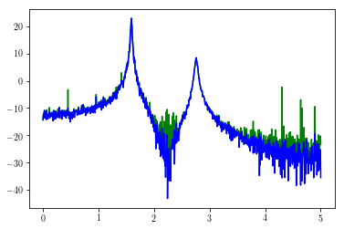
In [73]:
Pxx.shape
Out[73]:
(2, 1025)
In [80]:
plt.plot(freq_vec, 20*sp.log10(Pxx[:,:].T))
plt.title('Raw ASDs')
plt.show()

In [82]:
freq_vec, Pxx = vt.asd(Yout, tin, windowname="hanning", ave=bool(True))
print(freq_vec.shape)
print((20*np.log10(Pxx)).shape)
print(Pxx.shape)
plt.plot(freq_vec, 20*np.log10(Pxx).T)
plt.title('Averaged ASDs')
plt.show()
(1025,)
(2, 1025)
(2, 1025)
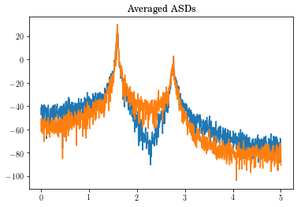
In [85]:
f, Txy1, Txy2, coh, Txyv = vt.frfest(Yout, Ucomb, t, Hv=bool(True))
#fig_amp,=plt.plot(f[0,:],20*np.log10(np.abs(Txy1[0,:])),legend='$H_1$',f[0,:],20*np.log10(np.abs(Txy2[0,:])),legend='$H_2$',f[0,:],20*np.log10(np.abs(Txyv[0,:])),legend='$H_v$')
(line1, line2, line3) = plt.plot(f,20*np.log10(np.abs(Txy1[0,:])),f,20*np.log10(np.abs(Txy2[0,:])),f,20*np.log10(np.abs(Txyv[0,:])))
plt.title('FRF of ' + str(Yout.shape[2]) + ' averages.')
plt.legend((line1,line2,line3),('$H_1$','$H_2$','$H_v$'))
plt.show()
plt.plot(f,180.0/np.pi*np.unwrap(np.angle(Txy1[0,:])),f,180.0/np.pi*np.unwrap(np.angle(Txy2[0,:])),f,180.0/np.pi*np.unwrap(np.angle(Txyv[0,:])))
plt.title('FRF of ' + str(Yout.shape[2]) + ' averages.')
plt.show()
plt.plot(f,coh[0,:])
plt.show()
vt.frfplot(f,Txy1,freq_max=3.5)
works until here?
(2, 2048, 3)
(1, 2048, 3)
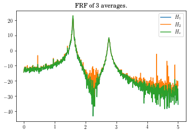
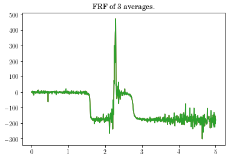
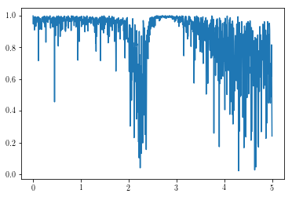
---------------------------------------------------------------------------
AttributeError Traceback (most recent call last)
<ipython-input-85-d630a4a440c2> in <module>()
10 plt.plot(f,coh[0,:])
11 plt.show()
---> 12 vt.frfplot(f,Txy1,freq_max=3.5)
AttributeError: module 'vibrationtesting' has no attribute 'frfplot'
In [ ]:
freq_vec.shape
In [ ]:
plt.plot(freq_vec, 20*np.log10(Pxx))
In [ ]:
Pxx.shape
In [ ]:
vt.hanning(Yout[:,:,0]).shape
In [ ]:
np.linspace(0,1,4).shape
In [ ]:
from scipy import signal
import numpy as np
import matplotlib.pyplot as plt
import vttools as vt
from numpy import linalg
sample_freq = 1e3
tfinal = 5
sig_freq=1#50
A=10
noise_power = 0.0001 * sample_freq / 2
noise_power = A/1e2
time = np.arange(0,tfinal,1/sample_freq)
x = A*np.sin(2*np.pi*sig_freq*time)
print(x.shape)
x_sig = x + np.random.normal(scale=np.sqrt(noise_power), size=time.shape)
print(x_sig.shape)
plt.subplot(2,1,1)
plt.plot(time,x_sig)
plt.title('Time history')
plt.xlabel('Time (sec)')
plt.ylabel('$x(t)$')
freq_vec, Pxx = vt.asd(x, time, window="hanning", ave=bool(False))
plt.subplot(2,1,2)
#plt.plot(freq_vec[0,:], 20*np.log10(Pxx[0,:,:]))
plt.ylim([-400, 100])
plt.xlabel('frequency [Hz]')
plt.ylabel('PSD [V**2/Hz]')
plt.show()
In [ ]:
x_sig.shape
In [ ]:
import vttools as vt
In [ ]:
vt.hanning(4).shape
In [ ]:
a=vt.hanning(5)
win=vt.hanning(a)
In [ ]:
import numpy as np
In [ ]:
print('reshape is NOT what you want. You want SWAPAXES')
b = np.hstack((np.reshape(a,(-1,1)),np.reshape(a,(-1,1))))
In [ ]:
b.shape
In [ ]:
win2 = vt.hanning(b)
In [ ]:
win2.shape
In [ ]:
c=np.dstack((b,b))
In [ ]:
c
In [ ]:
win3=vt.hanning(c)
In [ ]:
win3.shape
In [ ]:
win3
In [46]:
vt.window(np.linspace(0,10).reshape(-1,1)).shape
You shouldn't do that.
The 1 dimension is the time (or frequency) incrementing dimension.
Swapping axes temporarily to be compliant with expectations.
I'll reluctantly return a transposed result.
Out[46]:
(50, 1)
In [87]:
help(vt.frfest)
Help on function frfest in module vibrationtesting.signal:
frfest(x, f, dt, window='hanning', ave=True, Hv=False)
returns freq, H1, H2, coh, Hv
Estimates the :math:`H(j\omega)` Frequency Response Functions (FRFs) between :math:`x` and :math:`f`.
- parameters using ``:param <name>: <description>``
- type of parameters ``:type <name>: <description>``
- returns using ``:returns: <description>``
- examples (doctest)
- seealso using ``.. seealso:: text``
- notes using ``.. note:: text``
- warning using ``.. warning:: text``
- todo ``.. todo:: text``
:param x: output or response of system
:param f: input to system
:param dt: time step or time array
:param window: name of data window to apply
:param ave: apply averaging
:param Hv: calculate :math:`H_v` Frequency Response Function Estimation
:type x: float array
:type f: float array
:type dt: float
:type window: string
:type ave: Boolean
:type Hv: Boolean
:returns: freq, H1, H2, coh, Hv
:return freq: frequency vector
:type freq: float array
:rtype: float array, float array, float array, float array, float array
Currently ``window`` and ``ave`` are locked to default values.
:Example:
>>> import control as ctrl
>>> import matplotlib.pyplot as plt
>>> import vibrationtesting as vt
>>> import numpy as np
>>> sample_freq = 1e3
>>> noise_power = 0.001 * sample_freq / 2
>>> A = np.array([[0, 0, 1, 0], [0, 0, 0, 1], [-200, 100, -.2, .1], [100, -200, .1, -.2]])
>>> B = np.array([[0], [0], [1], [0]])
>>> C = np.array([[35, 0, 0, 0], [0, 35, 0, 0]])
>>> D = np.array([[0], [0]])
>>> sys = ctrl.ss(A, B, C, D)
>>> tin = np.arange(0, 51.2, .1)
>>> nr=.5 # 0 is all noise on input
>>> for i in np.arange(5): #was 2*50
... u = np.random.normal(scale=np.sqrt(noise_power), size=tin.shape)
... #print(u)
... t, yout, xout = ctrl.forced_response(sys, tin, u,rtol=1e-12,transpose=True)
... if 'Yout' in locals():
... Yout=np.dstack((Yout,yout+nr*np.random.normal(scale=.050*np.std(yout[0,:]), size=yout.shape)))
... Ucomb=np.dstack((Ucomb,u+(1-nr)*np.random.normal(scale=.05*np.std(u), size=u.shape)))
... else:
... Yout=yout+nr*np.random.normal(scale=.050*np.std(yout[0,:]), size=yout.shape) # 5% half the noise on output as on input
... Ucomb=u+(1-nr)*np.random.normal(scale=.05*np.std(u), size=u.shape)#(1, len(tin))) #10% noise signal on input
>>> plt.plot(tin,Yout[:,0,:])
[<matplotlib.lines.Line2...
>>> Yout=Yout*np.std(Ucomb)/np.std(Yout)#40
>>> plt.title('time response')
Text(0.5,1,'time response')
>>> freq_vec, Pxx = vt.asd(Yout, tin, windowname="hanning", ave=bool(False))
>>> plt.plot(freq_vec, 20*np.log10(Pxx[0,:]))
[<matplotlib.lines.Line2D object at ...]
>>> plt.title('Raw ASDs')
Text(0.5,1,'Raw ASDs')
>>> freq_vec, Pxx = vt.asd(Yout, tin, windowname="hanning", ave=bool(True))
>>> plt.plot(freq_vec, 20*np.log10(Pxx[0,:]))
[<matplotlib.lines.Line2D object at ...]
>>> plt.title('Averaged ASDs')
Text(0.5,1,'Averaged ASDs')
>>> f, Txy1, Txy2, coh, Txyv = vt.frfest(Yout, Ucomb, t,Hv=bool(True))
>>> #fig_amp,=plt.plot(f[0,:],20*np.log10(np.abs(Txy1[0,:])),legend='$H_1$',f[0,:],20*np.log10(np.abs(Txy2[0,:])),legend='$H_2$',f[0,:],20*np.log10(np.abs(Txyv[0,:])),legend='$H_v$')
>>> (line1, line2, line3) = plt.plot(f,20*np.log10(np.abs(Txy1[0,:])),f,20*np.log10(np.abs(Txy2[0,:])),f,20*np.log10(np.abs(Txyv[0,:])))
>>> plt.title('FRF of ' + str(Yout.shape[2]) + ' averages.')
Text(0.5,1,'FRF of ' + str(Yout.shape[2]) + ' averages.')
>>> plt.legend((line1,line2,line3),('$H_1$','$H_2$','$H_v$'))
<matplotlib.legend.Legend object ...>
>>> plt.plot(f,180.0/np.pi*np.unwrap(np.angle(Txy1[0,:])),f,180.0/np.pi*np.unwrap(np.angle(Txy2[0,:])),f,180.0/np.pi*np.unwrap(np.angle(Txyv[0,:])))
[<matplotlib.lines.Line2D object at ...]
>>> plt.title('FRF of ' + str(Yout.shape[2]) + ' averages.')
Text(0.5,1,'FRF of ' + str(Yout.shape[2]) + ' averages.')
>>> plt.plot(f,coh[0,:])
[<matplotlib.lines.Line2D object at...
>>> vt.frfplot(f,Txy1,freq_max=3.5)
Copyright 1994 by Joseph C. Slater
:Modifications:
7/6/00: Changed default FRF calculation from H2 to H1, Added H1, H2, and Hv options.
4/13/15: Converted to Python
.. note:: Not comptible with scipy.signal functions
.. seealso:: :func:`asd`, :func:`crsd`, :func:`frfplot`.
.. warning:: hanning window cannot be selected yet. Averaging cannot be unslected yet.
.. todo:: Fix averaging, windowing, multiple input.
In [103]:
del Yout
sample_freq = 1e3
noise_power = 0.001 * sample_freq / 2
A = np.array([[0, 0, 1, 0], [0, 0, 0, 1], [-200, 100, -.2, .1], [100, -200, .1, -.2]])
B = np.array([[0], [0], [1], [0]])
C = np.array([[35, 0, 0, 0], [0, 35, 0, 0]])
D = np.array([[0], [0]])
sys = ctrl.ss(A, B, C, D)
tin = np.arange(0, 51.2, .1)
nr=.5 # 0 is all noise on input
for i in np.arange(5): #was 2*50
u = np.random.normal(scale=np.sqrt(noise_power), size=tin.shape)
#print(u)
t, yout, xout = ctrl.forced_response(sys, tin, u,rtol=1e-12)#,transpose=True)
if 'Yout' in locals():
Yout=np.dstack((Yout,yout+nr*np.random.normal(scale=.050*np.std(yout[0,:]), size=yout.shape)))
Ucomb=np.dstack((Ucomb,u+(1-nr)*np.random.normal(scale=.05*np.std(u), size=u.shape)))
else:
Yout=yout+nr*np.random.normal(scale=.050*np.std(yout[0,:]), size=yout.shape) # 5% half the noise on output as on input
Ucomb=u+(1-nr)*np.random.normal(scale=.05*np.std(u), size=u.shape)#(1, len(tin))) #10% noise signal on input
In [104]:
Yout.shape
Out[104]:
(2, 512, 5)
In [105]:
Ucomb.shape
Out[105]:
(1, 512, 5)
In [106]:
f, Txy1, Txy2, coh, Txyv = vt.frfest(Yout, Ucomb, t,Hv=bool(True))
(1, 512, 5)
(1, 257, 5)
(1, 512, 5)
(1, 257, 5)
works until here?
(2, 512, 5)
(1, 512, 5)
(1, 512, 5)
(1, 257, 5)
(2, 512, 5)
(2, 257, 5)
(2, 512, 5)
(2, 257, 5)
(2, 512, 5)
(2, 257, 5)
In [99]:
Yout.shape
Out[99]:
(512, 2, 5)